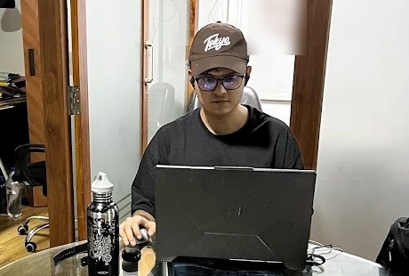

Sankur Kundu
ML systems engineer and independent researcher. I build GPU software for AI and science, and check every result against a reference implementation.
Co-founder of Gigzen, where I released Populace (1,600+ npm downloads). Scouted by Entrepreneur First (UK) from my public work. B.Tech in Computer Science and Engineering (AI & ML), Institute of Engineering & Management, Kolkata, 2026. Based in Bhubaneswar, India; open to relocation.
EmailCVGitHubLinkedInSigned emails
Why you might know me
- NASA’s Conjunction Assessment Risk Analysis team checked my reproduction of its collision probabilities (53 of 53 test cases, 15–19× faster per core):
your sampling space results indeed appear to be fully consistent with what we see in CARA operations
. kessler - Harvard’s Prof. Vijay Janapa Reddi merged my lab into his Machine Learning Systems textbook after rerunning it,
every result in your table reproduces
, and listed me as a contributor. #2175 - 29 of my fixes have been merged by the people who lead the projects, at Google, the European Space Agency, ITER, NIST, the US Department of Energy, MIT, gem5, the UK Met Office, NVIDIA, Apple, Meta and IBM Quantum.
- Approved by the leaders themselves: Jason Lowe-Power (gem5), Dario Izzo (European Space Agency), Damien Lebrun-Grandié (Kokkos, Los Alamos), Jonathan Guyer (NIST), Ardavan Oskooi (MIT MEEP) and Olivier Hoenen (ITER); and the creators of Tencent’s ncnn, Oxford’s PyZX and IBM’s Relay-BP.
- Google XLA, the compiler behind JAX and TPUs: I fixed a simplification that returned 0 instead of 10.
The change in the PR is correct.
#52906 - I built chirp, which finds 62 of 71 LIGO gravitational-wave events blind, and syndrome, a GPU decoder bit-identical to IBM’s and 28.7× faster.
Merged by the people who lead the projects
- Google XLA, the compiler behind JAX and TPUs, returned 0 instead of 10 for max(a, clamp(a, x, b)).
The change in the PR is correct.
#52906 - gem5, the simulator of chip research, read 1.8e-09 as 1.8 − 9: −61,489.8 instead of 0.285. Approved by its lead, Jason Lowe-Power. #3762
- European Space Agency: a pagmo2 crash open since May 2024, merged by its co-author Dario Izzo. #660
- US Department of Energy: Kokkos GPU sort, merged by its lead at Los Alamos after approval from Oak Ridge. #9738
- ITER: two fixes to IMAS-Python, the fusion project’s data library, merged by Olivier Hoenen. #152 #151
- NIST: FiPy truncated boundary distances on integer grids; merged by Jonathan Guyer, one of its authors. #1243
Also merged at the UK Met Office (twice), MIT (twice), IBM Quantum, NVIDIA (twice), Apple, Meta (twice), Tencent, Harvard, the Barcelona Supercomputing Center (twice), Estonia’s Information System Authority (twice), Oxford, Carnegie Mellon, Hugging Face (twice), Contrails.org and JaxMARL.
See all 29, with what was wrong and who merged it
Government & public science · 11
- crash → 84/84
European Space Agency · pagmo2 · the Advanced Concepts Team’s optimisation library
Monotonic basin hopping crashed whenever its inner optimiser left the bounds, a bug open since May 2024. It now perturbs around the nearest point inside them.
Dario Izzo · Co-author of pagmo2 · merged it the day I opened it. #660
- 1,808 tests pass
ITER Organization ×2 · IMAS-Python · data library of the fusion project
imas convert now takes a list of IDSs and occurrences and stops before writing if one is missing; a second fix pins the data-dictionary version the tests need.
Olivier Hoenen · ITER · assigned me the issue, approved and merged both.
Looks good to me now.
#152 #151 - dy=3: 1 → 1.5
NIST · FiPy · NIST’s finite-volume PDE solver
With integer grid spacing, Grid2D truncated the distances from boundary faces to their cells. They are now computed in float64, as the reviewer asked.
Jonathan Guyer · NIST · one of FiPy’s authors · merged it. #1243
- no build → 20/20
US Department of Energy · Kokkos · GPU library of the national laboratories
Kokkos::sort did not compile on NVIDIA CUDA or AMD HIP for types without a default constructor; it now sorts an index permutation. In the Kokkos 5.4 release notes.
Damien Lebrun-Grandié · Leads Kokkos, Los Alamos · merged it after approval by Daniel Arndt, Oak Ridge.
Generally the approach looks good.
#9738 - crash → time coord
UK Met Office · Iris · weather and climate data in Python
iris.pandas.as_cubes crashed when a date-time column held one value in every row. It now becomes a time coordinate with the right units and calendar.
Martin Yeo · UK Met Office · approved and merged it.
Thanks @Shakhtar-Sankur!
#7375 - 6,502 tests pass
UK Met Office & STFC · PSyclone · code generator of the LFRic weather and climate model
Fortran BIND(C) bindings were dropped and BIND(C) functions crashed it. Both fixed; entry 82 of its changelog.
PSyclone maintainer · Ran the integration tests, approved and merged it.
ITs passed
#3668 - 32-bit → 64-bit
Barcelona Supercomputing Center ×2 · Autosubmit · Spain’s climate-model workflow manager
Job timestamps overflowed 32-bit PostgreSQL columns and crashed autosubmit run. Invited for the 4.2.0 release and credited in its changelog, then a second fix the maintainer asked for.
Bruno P. Kinoshita · Autosubmit maintainer · merged both.
Thanks (again) @Shakhtar-Sankur !!!
#3405 #3406 - offline crash → skipped
Estonian Information System Authority ×2 · libdigidocpp · Estonia’s digital-signature library
Signing tests crashed without a network connection and are now skipped offline; the OCSP time-check notes now match the code.
Raul Metsma · Maintainer · approved both. Merged by Kristel Merilain..
Thanks, both rules now match the code.
#777 #775
Universities & research · 8
- −61,489.8 → 0.285
gem5 · Simulator of academic and industry chip research
Power-model formulas read 1.8e-09 as 1.8 − 9, with no warning. Fixed the parser and wrote its first unit tests; all 1,092 unit tests pass.
Jason Lowe-Power · Leads gem5 · approved it. Merged by Bobby R. Bruce.. #3762
- 0.25× → 0.97–1.02×
MIT ×2 · MEEP · electromagnetics simulator
Remaining-time estimates fell to a quarter of the real time, on an issue where Prof. Steven G. Johnson asked for a pull request; and an input is no longer silently mutated.
Ardavan Oskooi · MEEP’s original lead developer · merged both.
failing fast and explicitly is strongly preferred
#3364 #3363 - 8× too fast → measured
Harvard University · mlsysim · simulator of the Machine Learning Systems textbook
The simulator modelled FP32 work on the NVIDIA T4 about 8× too fast, measured on a real T4. The second merge, after my full lab.
Prof. Vijay Janapa Reddi · Author of the textbook · merged it. #2192
- 12× → 1×
Contrails.org · pycontrails · aviation climate-impact library
Gridded contrail radiative forcing was divided by one time step instead of the averaging window, and the cell area came from the wrong grid.
Zeb Engberg · Maintainer · merged it.
Thanks @Shakhtar-Sankur !
#453 - 25/100 → 0
University of Oxford · PyZX · ZX-calculus quantum-circuit optimiser
Three optimisers changed what the circuit computes on random Clifford circuits, a regression from an earlier change.
John van de Wetering · Co-creator of PyZX · merged it.
Thanks for the fix!
#563 - 8 baselines fixed
JaxMARL · NeurIPS 2024 · Oxford, UCL and Imperial College London
The rollout manager behind 8 Q-learning baselines zeroed the first observation of every new episode.
Alex Rutherford · Lead author · approved and merged it.
Good find!!
#206 - crash → whole chars
Carnegie Mellon University · XGrammar · structured output for vLLM, SGLang and TensorRT-LLM
Jump-forward decoding crashed whenever a grammar forced part of a UTF-8 character; it now returns only whole characters. Its maintainer extended the fix to the web bindings.
Linzhang Li · Maintainer · approved and merged it. #1012
Industry · 10
- 0 → 10
Google · XLA · compiler behind JAX, TensorFlow and TPUs
The algebraic simplifier rewrote max(a, clamp(a, x, b)) to clamp(a, x, b) for any bounds. It now rewrites only when a ≤ b is known; all 2,070 simplifier tests pass.
Greg Olechwierowicz · XLA reviewer · landed by Google in XLA’s main branch.
The change in the PR is correct.
#52906 - 1,970/2,000 → 0
IBM Quantum · Relay-BP · quantum error-correction decoder
The decoder gave different answers for the same shot depending on batch order. Its first author chose my fix from the two I proposed.
Tristan Müller · First author of Relay-BP · merged it.
Happy with this, will merge it.
#49 - ignored → bit for bit
NVIDIA ×2 · Ising-Decoding · AI decoders for quantum error correction
Tests and docs ignored the SafeTensors models NVIDIA publishes on Hugging Face; they now load the newest file, bit for bit, and honour the checkpoint setting.
Ivan Basov · Maintainer · approved and merged both.
thank you for the contribution and for working through the review rounds
#98 #99 - 2–4 races → 0
Apple · MLX · Apple’s ML framework, 29k stars
A data race in the distributed ring backend, the transport that links Macs for multi-machine training.
@zcbenz · MLX maintainer · approved and merged it. #4737
- out of bounds → checked
- 30 NaN → 0
Tencent · ncnn · on-device AI inference, 24k stars
Mish returned NaN on Vulkan GPUs for large inputs. Its creator extended the tests before merging.
nihui · Creator of ncnn · approved and merged it.
Thanks for your contribution !
#7239 - 177 tests pass
Each bug was found by running the project’s own tests and fixed with a test that fails without the fix. Every claim, with its proof →
Things I built

- kessler53/53
NASA CARA’s Monte Carlo collision probability on all 53 test cases, 15–19× faster per core; screens 531 million object pairs in 28 s on one T4.
- chirp62/71
An independent GPU search for gravitational waves that finds 62 of 71 LIGO O4a events blind.
- syndrome28.7×
A GPU decoder for IBM’s quantum codes, bit-identical to IBM’s Relay-BP and 28.7× faster per shot.
- tessel1.00× cuBLAS
A tile language and compiler in Rust: GEMM at cuBLAS parity, attention 1.3–1.9× PyTorch SDPA.
- samebit0.75%
Qwen2.5-0.5B run entirely in integers, within 0.75% of float32, the same bits on a GPU and a CPU.
- lipi23/24
A tokenizer that beats GPT-4o’s and Gemini’s in 23 of 24 Indian languages.
- ratchet5.2 → 0.04
GRPO from scratch; found fp16 weight sync silently erasing training updates.
- larzavan8.8 / 9.0
Open global earthquake early warning: Tohoku’s magnitude from GNSS, held out of the fit.
- relay · switchyard · kiln · quorumdb
LLM serving that survives 60 kills, mixture-of-experts 2.2× faster than Hugging Face, an ML compiler beating torch.compile, and distributed SQL.
Papers
- Reproducing NASA CARA’s Monte Carlo Probability of Collision: An Open Two-Body Implementation, Checked on All 53 of CARA’s Test Conjunctions
- Removing the Token Tax from an Existing Model: A Vocabulary Extension for 24 Indian Languages That Keeps Every Other Token
- The Sampler Was Not the Policy: Finding and Removing a Silent Training–Inference Mismatch in a From-Scratch GRPO Stack